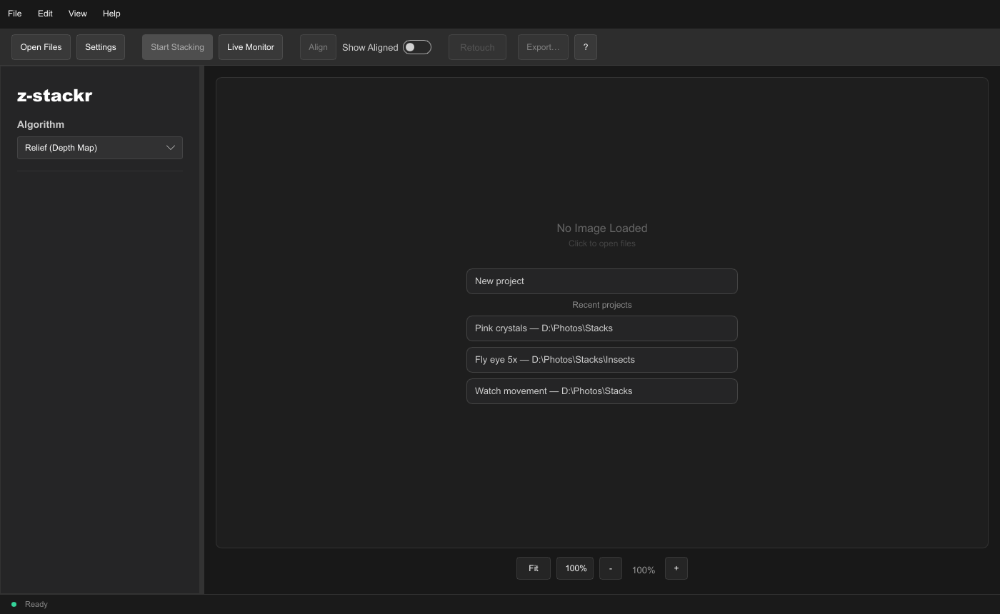
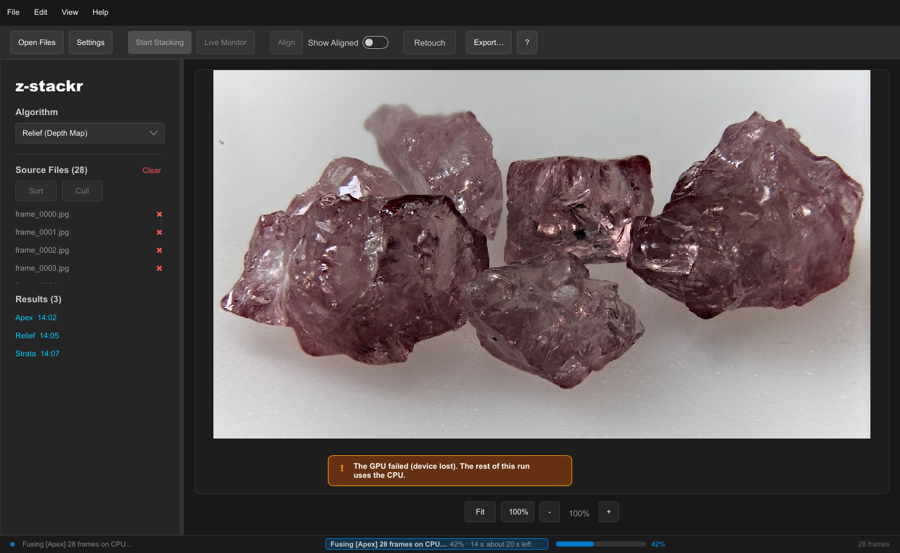
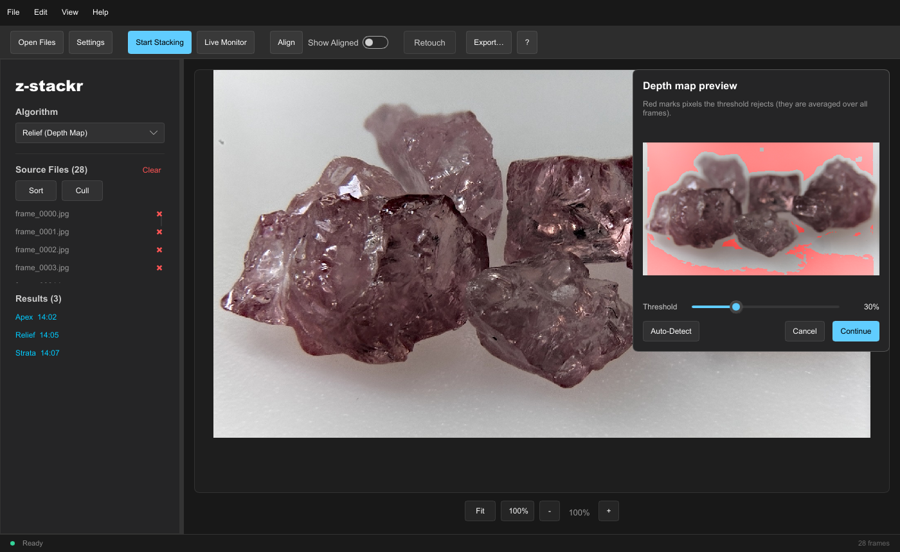
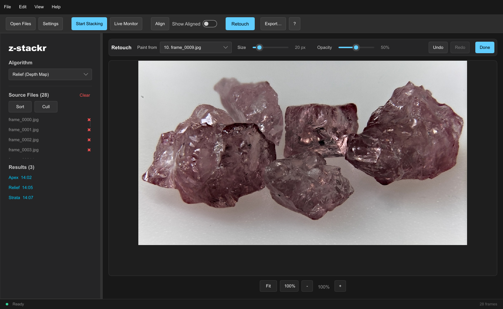
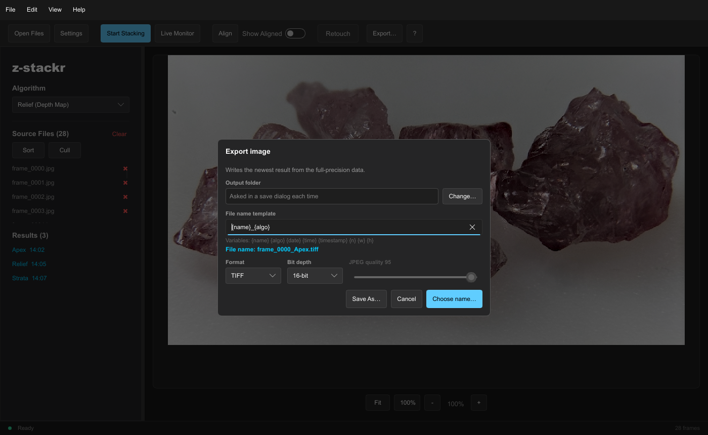
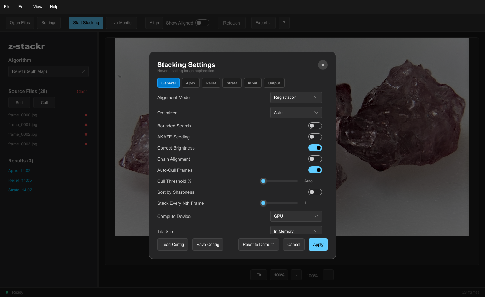
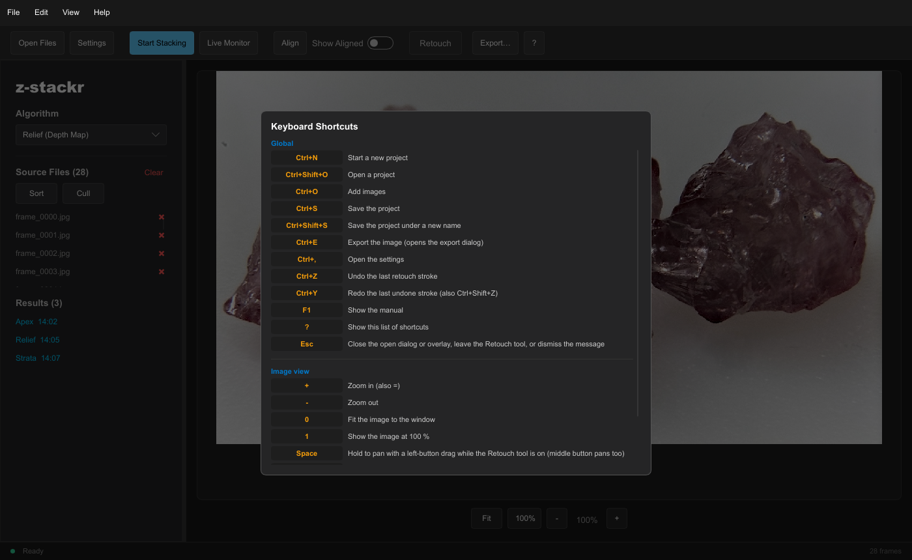
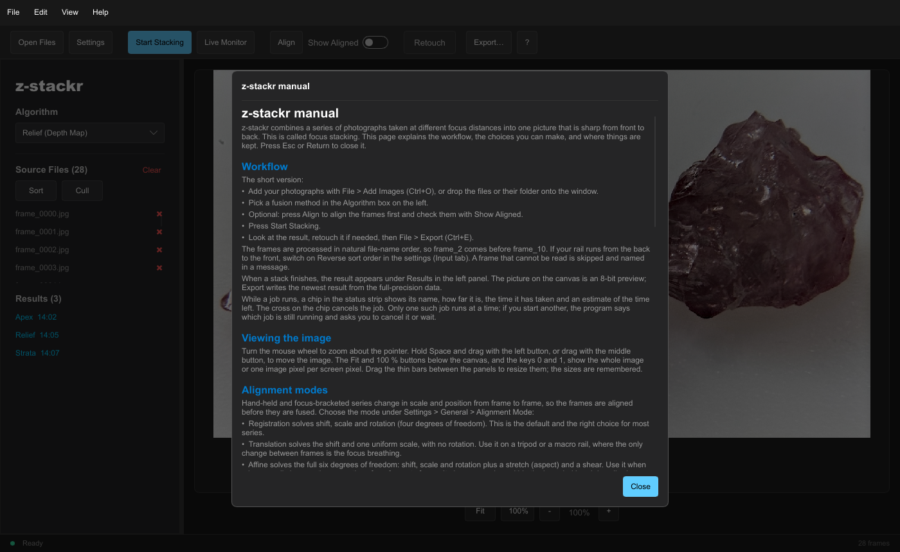
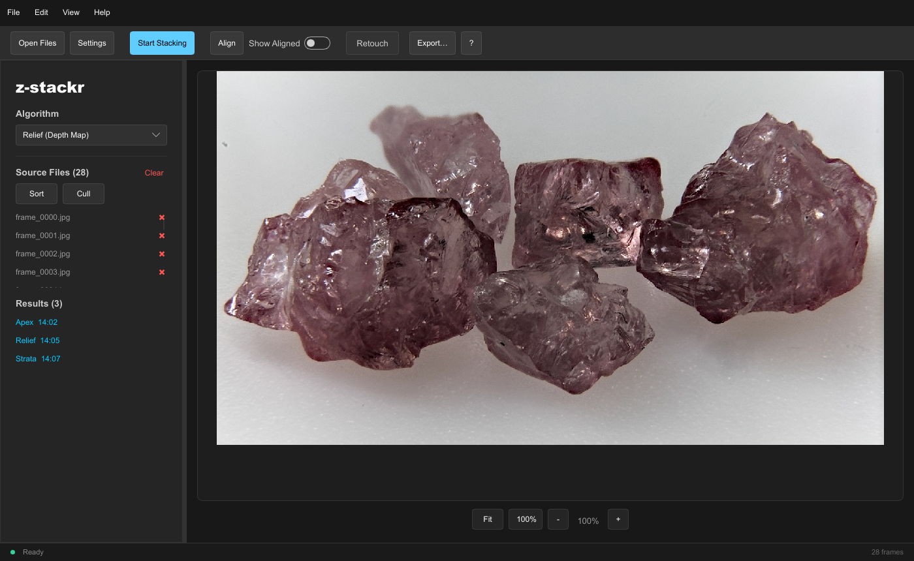

z-stackr-gui
The desktop app
Add frames, stack, look, retouch, export. The screenshots on this page are the app's own window, rendered from its interface files.
01Adding frames
Add photographs with File → Add Images (Ctrl+O), or
drop image files, a folder of images or a project file on the window. Frames
that cannot be read are skipped and named in a message. A source file is
removed with its ×; Clear empties the list after asking. In a build with
the raw feature, camera RAW files can be added as well.
Two buttons above the list work on the frames without running a stack. Sort rates every frame for sharpness and reorders the list sharpest-first; Cull rates them and marks the frames below the cull threshold as culled (the same actions are in the Edit menu). Both need at least one frame and are unavailable while a job runs.

02Aligning and stacking
Choose the method in the Algorithm box and press Start Stacking. The box offers Relief (Depth Map), Apex (Laplacian), Strata (Guided Fusion), Both (Relief & Apex) and All Three (Strata, Relief & Apex); the last two align once and list one result per method (see how they differ). Align runs the alignment alone; Show Aligned then shows the aligned, cropped version of the frame you click, and the next stack reuses the aligned frames while the files and the alignment settings are unchanged.
While aligning, the canvas shows each frame as it is registered. Every job appears as a chip in the status strip with its progress, the time it has taken, an estimate of the time left and a cancel button. Only one blocking job runs at a time; warnings and errors stay on screen until you dismiss them and are also written to the log.


When the files or the settings change after a run, a badge reading Stale (files), Stale (settings) or both appears under the aligned frames or the newest result, with a Recompute button.
03The depth-map preview
With Show preview during stacking on, a Relief run pauses on a card over the canvas. The pixels that would take the mean of all frames instead of one sharp frame are tinted; move the contrast threshold, or press Auto-detect (the median of the focus scores plus 1.5 times their median absolute deviation), then Apply or Cancel. The card is not a dialog: the rest of the window and the shortcuts keep working.

04Retouching
Retouch is a tool: the toolbar button, the R key or Edit → Retouch Brush switches it on once there is a stacked result. A slim row above the canvas holds the settings, and a left-drag paints pixels from the frame chosen in Paint from onto the newest result. Size is the brush radius in image pixels ([ and ] step it; changing the source frame later re-sources the strokes already painted), Opacity how strongly it paints. Each drag is one undo step (Ctrl+Z, Ctrl+Y). Done or Esc leaves the tool; with it off, a left-drag pans.

05Export
File → Export (Ctrl+E) opens the export dialog: the output folder, a file-name template, the format (TIFF, PNG or JPEG), the bit depth and the JPEG quality. The newest result is encoded from the full-precision linear data with the retouching included, so a 16-bit file holds real 16-bit samples. With Copy metadata on in the settings, the EXIF block of the first source frame is copied into a JPEG or PNG file (its orientation set upright, because the app already turned the pixels); a TIFF carries none, and a message says so.
| Variable | Becomes |
|---|---|
{name} | the project name, or the first source file's name before the project is saved |
{algo} | the method that made the result: Apex, Relief or Strata |
{date}, {time} | for example 2026-10-01 and 14-05-09, in UTC |
{timestamp} | Unix seconds |
{n} | the number of source frames |
{w}, {h} | the image size in pixels |
Export never overwrites: if the file exists, a number is appended
(name (2).png). Characters that file systems reject are replaced,
and Windows device names such as CON are changed.
Save As always asks for the name.

06Projects
A project is a small text file, <name>.zstack.toml, saved by
default next to the first source image. It stores the source list in order
(relative paths where the files lie below the project's folder), every stacking
setting and the retouch strokes, but not the photographs. New, Open, Open
Recent (the last ten), Save and Save As are in the File menu. A star in the
title bar marks unsaved changes; undoing a change removes it again, and
closing the window, New and Open ask to save, discard or cancel first.
07Settings
Edit → Settings (Ctrl+,) holds the same keys the
command-line tool reads. Every edit applies at once and is saved a moment
later to settings.toml; Cancel restores the settings as they
were when the dialog opened. Load Config and Save Config exchange a settings
file with the command line. Every setting has a tooltip.
- General
- Alignment mode, optimizer, bounded search, AKAZE seeding, brightness correction and chain alignment; auto-cull, the cull threshold, sort by sharpness and stack every Nth frame; compute device; and Tile size.
- Apex
- Pyramid levels, all color channels, grit suppression.
- Relief
- Estimation and smoothing radius, contrast threshold, the preview and its auto-detect, and the multigrid depth solver.
- Strata
- Base radius and detail focus.
- Input
- Rotation, crop, resize, reverse sort order and the EXIF orientation switch.
- Output
- Crop to common area, resize cropped to original, file format, bit depth, JPEG quality, name template, output folder and copy metadata.
Tile size (desktop only) chooses how a stack is held while it is fused. In Memory, the default, is the fastest. A tile size of 512, 1024, 2048 or 4096 pixels processes the picture in square tiles kept in a scratch folder, so a stack that does not fit in memory can still be fused; smaller tiles need less memory and more time. The command-line tool has its own tile-size argument, which wins over this setting in a shared file.

08Shortcuts and help
Press ? for the list of shortcuts and F1 for the manual, both inside the app. The first time auto-cull runs, the depth-map preview opens or the Retouch tool is switched on, a short card explains it; “Don't show again” is remembered.




| Keys | Action |
|---|---|
| Ctrl+N | Start a new project |
| Ctrl+Shift+O | Open a project |
| Ctrl+O | Add images |
| Ctrl+S | Save the project |
| Ctrl+Shift+S | Save the project under a new name |
| Ctrl+E | Export the image |
| Ctrl+, | Open the settings |
| Ctrl+Z / Ctrl+Y | Undo / redo a retouch stroke (also Ctrl+Shift+Z) |
| F1 | Show the manual |
| ? | Show the list of shortcuts |
| Esc | Close the open dialog or overlay, leave the Retouch tool, or dismiss the message |
| + / - | Zoom in / out |
| 0 / 1 | Fit the image / show it at 100 % |
| Space | Hold to pan with a left-button drag while the Retouch tool is on |
| R | Turn the Retouch tool on or off |
| [ / ] | Smaller / larger brush |
On macOS, Cmd replaces Ctrl. Shortcuts are ignored while a dialog is open, except Esc, which closes it.
09Live Monitor
Live Monitor watches a folder. Each time new frames arrive, for example from a camera that saves to a shared folder, the folder is stacked again with Apex and the new result is shown. Stop Monitor ends it.
10Where files are kept
| File | Folder | Content |
|---|---|---|
settings.toml, layout.toml, prefs.toml, recent.toml | the configuration folder: below %APPDATA% on Windows, ~/.config/z-stackr on Linux, ~/Library/Application Support/z-stackr on macOS | settings, panel sizes, dismissed hints, recent projects |
stacker.log | the data folder (the temporary folder when there is none) | the run log; its path is shown when the app starts |
stacker_result_*.png | the temporary folder | the 8-bit images behind the Results list |
A settings file that cannot be read is renamed
settings.toml.corrupt-<seconds> and the defaults are used; it
is never overwritten.
11In the browser
The app also runs in a web page, at live.z-stackr.suitable-na.me. It is the same window and the same pipeline compiled to WebAssembly; the stacking runs in a Web Worker, so the page stays responsive, and the images are read into the tab, never uploaded. It needs a browser with WebAssembly SIMD and WebGL2 (Chrome or Edge 91, Firefox 89, Safari 16.4 or newer); alignment needs WebGPU as well (Chrome or Edge 113, Firefox 141 on Windows, Safari 26).

What differs from the desktop app:
- Alignment runs on the GPU only. Without WebGPU, Start Stacking offers to stack without alignment; alignment mode None needs no GPU. The refinement always uses the Nelder-Mead search. Apex, Relief (with the multigrid depth map), Strata, auto-cull and decoding run on the CPU in one worker.
- Memory. A tab gets about 2 GiB. When a stack does not fit, the app offers to stack it at the largest pre-resize percentage that does; the desktop app and the command line stack the same images at full size, out of core when needed.
- Files are uploads and downloads. Add Images, drag and drop
and Open Project read files into the page; Save, Export and Save Config
download a file. There is no output folder, no recent-projects list, no
Live Monitor and no camera RAW (develop RAW files to JPEG, PNG or TIFF
first). A project download is
<name>.zstack.toml; opening it asks for its images, matched by file name. - Settings are kept in the browser's local storage.
- Shortcuts. Ctrl+N belongs to the browser, so New Project is Alt+N there; the shortcut list shows the keys in effect.